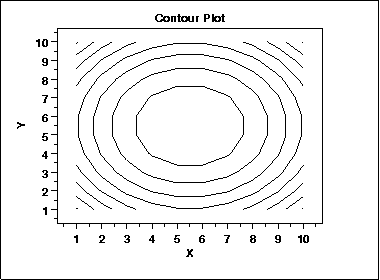

|
1.
Exploratory Data Analysis
1.3. EDA Techniques 1.3.3. Graphical Techniques: Alphabetic
|
|||
|
Purpose: Display 3-d surface on 2-d plot |
A contour plot is a graphical technique for representing
a 3-dimensional surface by plotting constant z slices,
called contours, on a 2-dimensional format. That is, given
a value for z, lines are drawn for connecting the (x,y)
coordinates where that z value occurs.
The contour plot is an alternative to a 3-D surface plot. |
||
|
Sample Plot: |

This contour plot shows that the surface is symmetric and peaks in the center. |
||
| Definition |
The contour plot is formed by:
An additional variable may be required to specify the Z values for drawing the iso-lines. Some software packages require explicit values. Other software packages will determine them automatically. If the data (or function) do not form a regular grid, you typically need to perform a 2-D interpolation to form a regular grid. |
||
| Questions |
The contour plot is used to answer the question
|
||
|
Importance: Visualizing 3-dimensional data |
For univariate data, a
run sequence plot and a
histogram are
considered necessary first steps in understanding the data.
For 2-dimensional data, a scatter plot
is a necessary first step in understanding the data.
In a similar manner, 3-dimensional data should be plotted. Small data sets, such as result from designed experiments, can typically be represented by block plots, DOE mean plots, and the like ("DOE" stands for "Design of Experiments"). For large data sets, a contour plot or a 3-D surface plot should be considered a necessary first step in understanding the data. |
||
| DOE Contour Plot | The DOE contour plot is a specialized contour plot used in the design of experiments. In particular, it is useful for full and fractional designs. | ||
| Related Techniques |
3-D Plot |
||
| Software |
Contour plots are available in most general purpose statistical
software programs. They are also available in many general
purpose graphics and mathematics programs. These programs
vary widely in the capabilities for the contour plots they
generate. Many provide just a basic contour plot over
a rectangular grid while others permit color filled or
shaded contours.
Most statistical software programs that support design of experiments will provide a DOE contour plot capability. |
||